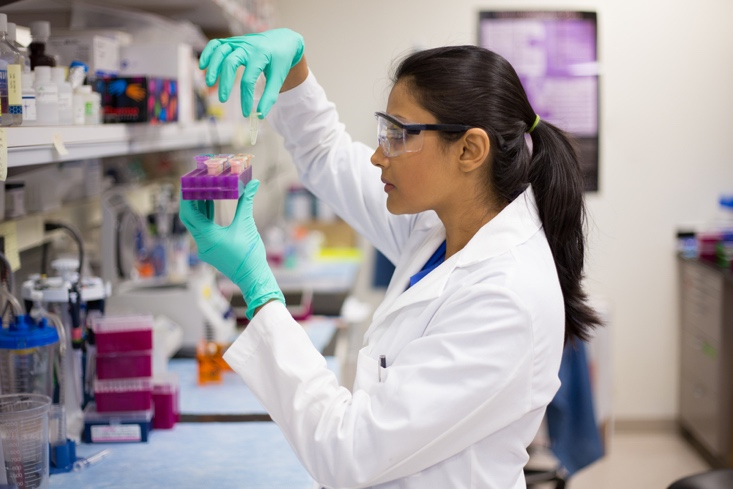

Social/Legal
Ethical and Religious Considerations in Infertility Treatment:
IVF is a unique procedure in that it involves creating human embryos outside the body.It can create a number of issues that are often overlooked including the:
- 1. The production of excess embryos and what one should do with them.
- 2. The creation of multiple pregnancies, for example: triplets and consideration to such issues as selective reduction.
- 3. Standing within your religious community.
For those who desire, we encourage further discussion with our staff and perhaps considering consulting with religious leaders or ethicists for guidance these challenging situations.
Psychosocial Effects of Infertility Treatment:
A diagnosis of infertility can be a devastating and life-altering event.
Infertility and its treatment can affect you and your partner medically, financially, socially, emotionally and psychologically.
Feelings of anxiousness, depression, isolation, and helplessness are not uncommon among patients undergoing treatment.
Strained and stressful relations with partners and other loved ones are not uncommon as treatment progresses.
While it is normal to experience emotional ups and downs, it is important to recognize severe feelings.
Our health-care team and mental health professionals are available to address emotional and physical symptoms that can accompany infertility.
Legal Considerations to Offspring:
The laws regarding embryo cryopreservation, future disposition including donating to research or to other couples and parent-child status of any resulting child or children may be unsettled in the state in which an ART program is located.
We certainly do not want to give any legal advice.
However, You may want to consult a lawyer who is experienced in the area of reproductive law and embryo cryopreservation and disposition.
IT is the LAW!!!
Reporting Outcomes:
The 1992 Fertility Clinic Success Rate and Certification Act requires the Centers for Disease Control and Prevention (CDC) to collect cycle outcomes on all IVF cycles performed in the United States each year and requires us to report success rates using these data.
As such, data from your IVF procedure will be provided to the CDC, and to the Society of Assisted Reproductive Technologies (SART) of the American Society of Reproductive Medicine (ASRM).
We may be requested to secure additional information from your IVF cycle.
Your information may be used BUT is disclosed in accordance with HIPAA guidelines.

Financial:
Every patient should have a financial consult and been given a copy of benefits from the insurance cards we provided to ARI. Patients are personally financially responsible for the expense of treatment and additional expenses for medical problems or those for a child.